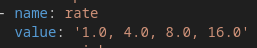
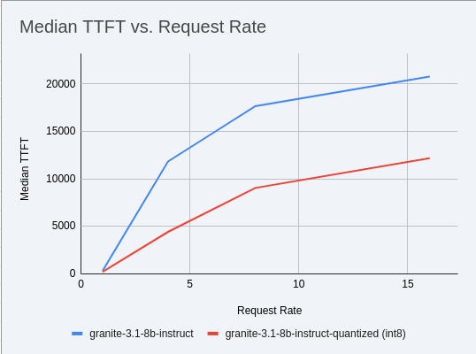
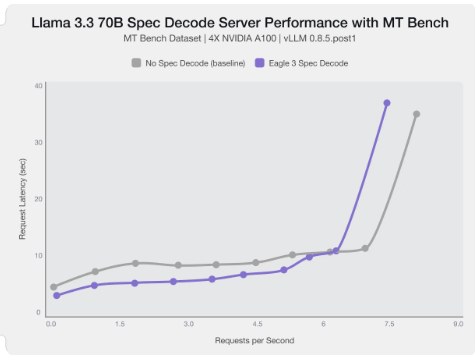
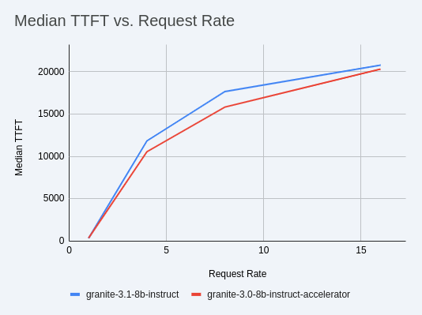
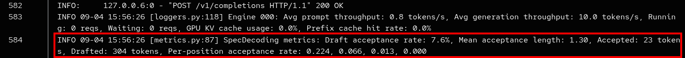

Advanced Optimization with Quantization
Tuning engine parameters is effective, but quantization is arguably the most impactful change you can make for performance. By reducing the model’s precision, we shrink its memory footprint, allowing for faster data movement and arithmetic on the GPU.
In this module, we will deploy a pre-quantized w8a8 (8-bit weights, 8-bit activations) version of our model and compare its performance directly against the full-precision version.
Quantization Reference Guide
FP8: If you have access to NVIDIA H100 GPUs or newer (e.g., B200), FP8 (E4M3 or E5M2) is a game-changer. These GPUs have dedicated FP8 Tensor Cores that offer significantly higher throughput compared to FP16. This provides a direct path to lower latency per token without significant accuracy loss for Llama 3 models.
INT8 (e.g., AWQ): Starting with A100 or even A6000/3090 GPUs, INT8 quantization is an excellent choice. It reduces the model to 8B * 1 byte = 8GB, halving the memory footprint and enabling faster integer operations.
INT4: If you’re pushing for absolute minimum latency and can tolerate a small accuracy trade-off, INT4 (e.g., via AWQ or other 4-bit methods) can reduce the model to 8B * 0.5 bytes = 4 GB. This is extremely memory-efficient and, on some hardware, can offer further speedups. Test accuracy thoroughly with your specific use case, as 4-bit can sometimes be more sensitive. Similarly, check out FP4 versions when Nvidia Blackwell hardware is available.
| Quantization Type | Recommended Hardware | Key Benefits for Latency | Memory Footprint (for Llama 3 8B) | Accuracy Consideration | Notes |
|---|---|---|---|---|---|
FP8 (E4M3/E5M2) |
NVIDIA H100 (or newer) |
- Dedicated FP8 Tensor Cores for significantly higher throughput. |
8B * 1 byte ~= 8 GB |
Minimal accuracy loss for Llama 3 models. |
Already a standard for high-performance inference. |
INT8 (e.g., AWQ) |
NVIDIA A100, A6000 (or newer) |
- Halves memory footprint. |
8B * 1 byte ~= 8 GB |
Generally decent accuracy preservation. |
Widely supported (across manufacturers) and fast. |
INT4 (e.g., AWQ) |
NVIDIA A100, A6000 (or newer) |
- Extremely memory-efficient. |
8B * 0.5 bytes ~= 4 GB |
Requires an accuracy trade-off. |
Pushes for absolute minimum latency. |
FP4 |
NVIDIA Blackwell (B200) |
- New architecture support for even lower-precision floating-point. |
8B * 0.5 bytes ~= 4 GB |
Designed to maintain better accuracy than integer 4-bit, but still requires validation. |
Emerging standard with the latest hardware (e.g., NVIDIA Blackwell). Look for NVFP4 variants. |
Please refer to the compatiblity chart https://docs.vllm.ai/en/latest/features/quantization/supported_hardware.html for up to date quantization support in vLLM.
Deploy the Quantized Version
-
Let us try to run a w8a8 int8 model with the original vLLM engine arguments we started with. Update the workshop_code/deploy_vllm/vllm_rhoai_custom_2/values.yaml with the following values. Make sure you update the uri with the correct model.
deploymentMode: RawDeployment fullnameOverride: granite-8b model: modelNameOverride: granite-8b uri: oci://quay.io/redhat-ai-services/modelcar-catalog:granite-3.1-8b-instruct-quantized.w8a8 args: - "--disable-log-requests" - "--max-num-seqs=32" - "--max-model-len=2048" -
Rerun the helm deployment
helm uninstall granite-8b && \ helm install granite-8b redhat-ai-services/vllm-kserve --version 0.5.11 -f workshop_code/deploy_vllm/vllm_rhoai_custom_2/values.yaml -
After the model redeploys update the /guidellm-pipeline/pipeline/guidellm-pipelinerun.yaml rate to 1.0, 4.0, 8.0, 16.0.

-
Rerun the guidellm benchmark pipeline.
oc create -f guidellm-pipeline/pipeline/guidellm-pipelinerun.yaml -n vllm -
After the pipeline finishes go to your OpenShift AI workbench and open the graph_benchmarks.ipynb file. Execute the first cell to download the latest benchmark file.
-
Copy and paste the code snippet below into the second cell or edit your code to be the same. This code extracts the median TTFT from our first benchmark run with the full weight Granite model and extracts the median TTFT from the most recent benchmark with the quantized version.
Execute the cell.
#extract the Metadata benchmark and the median TTFTs from parse_benchmark_stats import extract_ttft_from_file data = extract_ttft_from_file('benchmark_1.txt') data2 = extract_ttft_from_file(latest_file) print(data) print(data2) -
Copy and paste the code snippet below into the third cell or edit your code to be the same. This will generate a graph of the median TTFT for the poission rate for both models.
Execute the cell.
#graph of median TTFT vs poisson rate %pip -q install seaborn from seaborn_graph import create_ttft_plot create_ttft_plot(data, data2, 'granite-3.3-8b-instruct', 'granite-3.1-8b-instruct-quantized.w8a8')
Your chart should look similar to the one below.

Boom, a 2x speedup!
Using a Smaller Model
Following the same principle as quantization, serving a smaller model (when accuracy on task is acceptable) will enable faster response
times as less data is moved around (model weights+activations) and less sequential computations are involved (generally fewer layers).
For this particular use-case, consider ibm-granite/granite-3.1-2b-instruct.
Using Mixture of Expert Models
While Granite 3 is a strong dense model, for certain latency-sensitive scenarios, considering a Mixture-of-Experts (MoE) model like Mixtral 8x7B could be a compelling alternative.
Why MoE for Latency?
MoE models have a large total number of parameters (e.g., Mixtral 8x7B has 47B total parameters), but critically, they only activate a sparse subset of these parameters (e.g., 13B for Mixtral 8x7B) for each token generated. This means the actual computational cost per token is significantly lower than a dense model of its total parameter count.Which is especially true when sharding experts over multiple GPUs with MoE especially with vLLM’s optimized handling of MoE sparsity.
Trade-offs:
While MoE models can offer lower inference latency per token due to their sparse activation, they still require enough GPU memory to load the entire model’s parameters, not just the active ones. So, Mixtral 8x7B will demand more VRAM than Llama 3 8B, even if it’s faster per token. You’ll need sufficient GPU memory (e.g., a single A100 80GB or multiple smaller GPUs with tensor parallelism) to fit the full 47B parameters.
vLLM has strong support for MoE models like Mixtral, including optimizations for their unique sparse compute patterns and dynamic routing.
Speculative Decoding.
Speculative decoding is a powerful technique to reduce the generation latency, particularly noticeable for the Time To First Token (TTFT).
Speculative decoding is fundamentally a tradeoff: spend a little bit of extra compute to reduce memory movement. The extra compute is allocated towards the smaller draft model and consequent proposer verifying step. At low request rates, we are memory-bound, so reducing memory movement can really help with latency. However, at higher throughputs or batch sizes, we are compute-bound, and speculative decoding can provide worse performance.

The graph here from Red Hat Developer Blog highlighs the tradeoffs of speculative decoding at low request rate vs bigger batch sizes. Take away message: as long as the number of requests is bound to use a non-intensive amount of GPU resources (lower req/s), spec decoding can provide a nice speedup.
| Speculative decoding in vLLM is not yet fully optimized and does not always yield intended inter-token latency reductions. In particular, in this case it will fallback to V0 due to V1 still not supporting this particular speculation technique. Mind that what we’re comparing here is not going to be exactly apples to apples, as the V0 and V1 engine have quite substantial architectural differences. |
Speculative Decoding Exercise:
You’ll need to specify a smaller draft model. A good starting point for Llama/granite might be a smaller Llama/granite variant or as in this example a speculator trained specifically for our use-case. Let’s redeploy with the following engine arguments:
-
Update the workshop_code/deploy_vllm/vllm_rhoai_custom_2/values.yaml with the following values.
deploymentMode: RawDeployment fullnameOverride: granite-8b model: modelNameOverride: granite-8b uri: oci://quay.io/redhat-ai-services/modelcar-catalog:llama-3.1-8b-instruct-eagle3 env: - name: HF_HUB_OFFLINE value: "1" args: - --disable-log-requests - --max-num-seqs=32 - --max-model-len=2048 - --max-num-batched-tokens=2048 - '--speculative-config={"model": "/mnt/models/llama-3.1-8b-instruct-eagle3", "method": "eagle3", "num_speculative_tokens": 4, "draft_tensor_parallel_size": 1}'
-
Rerun the helm deployment
helm uninstall granite-8b && \ helm install granite-8b redhat-ai-services/vllm-kserve --version 0.5.11 -f workshop_code/deploy_vllm/vllm_rhoai_custom_2/values.yamlvLLM will spin up an instance with the two models. There’s no free-lunch though, mind that the GPU memory will now be comprised of: the original
ibm-granite/granite-3.1-8b-instructweights +ibm-granite/granite-3.0-8b-instruct-acceleratorproposer weights + a KV cache for both models.
-
Send in a request to the inference endpoint.
curl -X POST -H "Content-Type: application/json" -d '{ "prompt": "What does Red Hat do?", "max_tokens": 100, "model": "granite-8b" }' https://<YOUR-EXTERNAL-INFERENCE-ENDPOINT>/v1/completions | jqA key metric to keep an eye on when serving a speculator is the
acceptance rate:
This is the percentage of tokens being produced by the speculator that match the ones of the draft model. Here we’re still on the lower side as ideally you would want to see this number be higher.
This is tied to major drawback holding back the adoptability of speculative decoding, which is the fact that the speculator needs to be trained specifically for the model you intend to deploy, in order to achieve an high acceptance rate.
Bonus: Batch Processing Case Study:
Throughput Optimization for granite-3.1-8b-instruct with vLLM:
What arguments would you change for a batch processing job that analyzes 100,000 customer reviews every night?
Key Metrics Checklist
Optimization is an iterative process. As you tune vLLM, continuously monitor key metrics:
-
Time To First Token (TTFT): Critical for interactive applications.
-
Throughput (Tokens/sec or Requests/sec): To ensure your concurrency goals are met.
-
GPU Utilization: High utilization indicates efficient use of resources.
-
GPU KV cache usage: At very high rates early on into a benchmark, it is an indicator of likely insufficient memory for KV cache.
-
Important engine arguments for customers that don’t want to send data to the vLLM team
-
VLLM_NO_USAGE_STATS=1
-
DO_NOT_TRACK=1